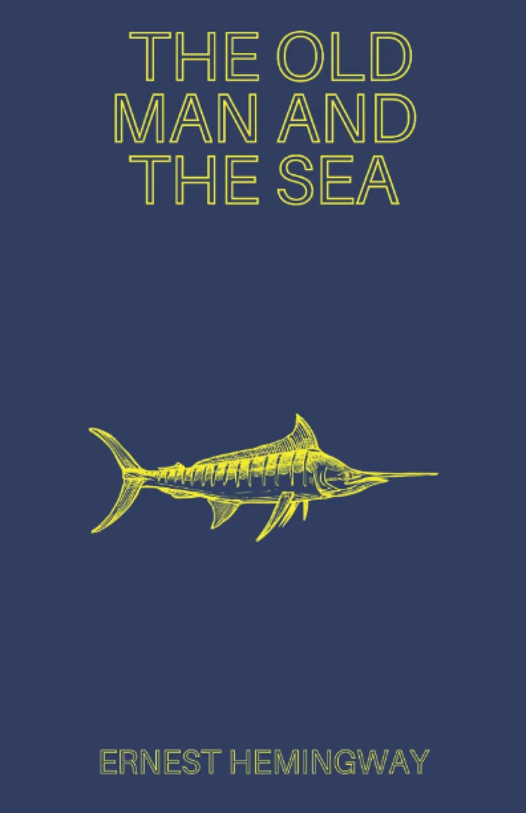
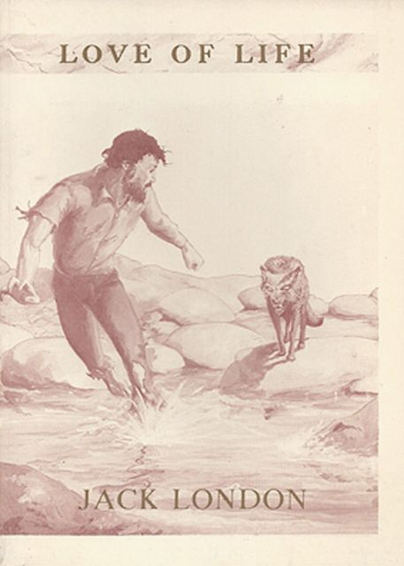
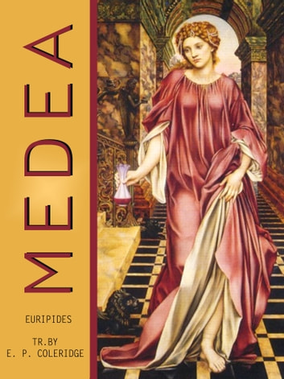
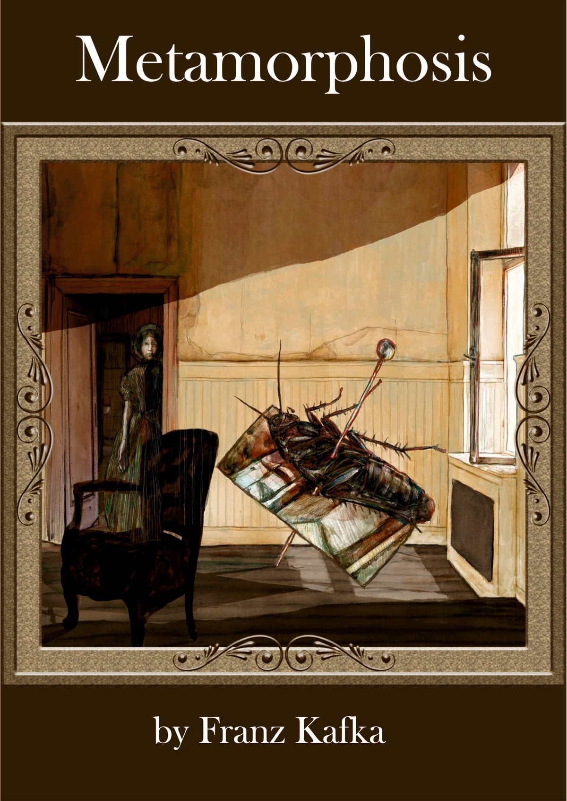

ალბერ კამიუ - "უცხო"
ალბერ კამიუს სადებიუტო რომანი, ეგზისტენციალისტური იდეების კლასიკური გამოსახვა, "უცხო" მოგვითხრობს ალჟირში მცხოვრები ფრანგის, მერსოს ცხოვრებისა და გასამართლების შესახებ. რომანი განიხილავს აბსურდის ფილოსოფიის იდეებს.

ერნესტ ჰემინგუეი - "მოხუცი და ზღვა"
„მოხუცი და ზღვა" - მოთხრობა რომელმაც ავტორს ნობელის პრემია მოუტანა, დაიწერა 1951 წელს, კუბაში. მოთხრობილია მოხუცი მეთევზის ამბავი რომელსაც მრავალდღიანი მარცხის შემდეგ გიგანტურ თევზთან შეჭიდება მოუწევს. მოთხრობა ჰემინგუეის შემოქმედებაში გმორჩეულ ადგილს იკავებს.

ჯეკ ლონდონი - "ცხოვრების სიყვარული"
"„ცხოვრების სიყვარული“ ორი ოქროს მაძიებლის შესახებ მოგვითხრობს, რომლებიც გადარჩენას კანადის გაუსაძლის სიცივეში ცდილობენ. ჯეკ ლონდონი დეტალურად აღწერს პერსონაჟების მიერ გამოვლილ შიშს, ტანჯვასა და შიმშილს - წარმოაჩენს ადამიანის ბრძოლას სიცოცხლისთვის.

ევრიპედე - მედეა
კლასიკური ათენის ტრაგიკოსის, ევრიპედეს ნაწარმოები „მედეა", ძველბერძნული ტრაგედიისა და მსოლიო ლიტერატურის სანიმუშო ნამუშევარია.

ფრანც კაფკა - გარდასახვა
„გარდასახვა" ავტორის შემოქმედებიდან ერთ-ერთი ყველაზე ცნობილი ნაწარმოებია. ნოველა ახალგაზრდა კომოვოიჟერის, გრეგორი ზამზას შესახებ მოგვითხრობს, რომელიც დილით გაღვიძებისას აღმოაჩენს, რომ საზარელ მწერად გადაიქცა. ნაწარმოები წარმოაჩენს მთავარი პერსონაჟის ურთიერთობას ოჯახთან და გარე სამყაროსთან.